FRONT DRIVE SHAFT ASSEMBLY > REASSEMBLY |
| 1. INSTALL FRONT AXLE HUB DUST SEAL |
| 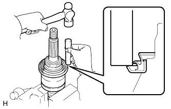 |
Using a brass bar and hammer, install a new dust seal.
| 2. INSTALL FRONT DRIVE SHAFT DUST COVER |
| 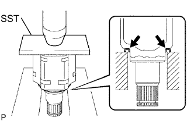 |
Using SST and a press, install a new dust cover.
| 3. INSTALL SHAFT SNAP RING |
| 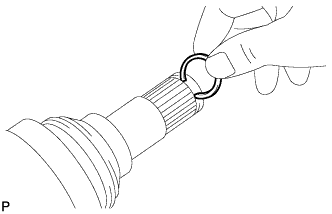 |
Install a new shaft snap ring.
| 4. INSTALL OUTBOARD JOINT BOOT |
| 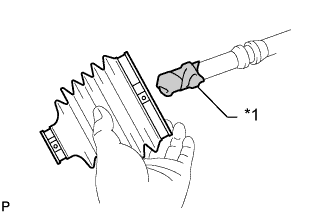 |
| *1 | Vinyl Tape |
Temporarily install a new outboard joint boot with 2 new clamps to the outboard joint.
Pack the outboard joint and boot with grease from the boot kit.
| 5. INSTALL FRONT NO. 2 AXLE OUTBOARD JOINT BOOT CLAMP |
Hold the drive shaft lightly in a vise between aluminum plates.
| 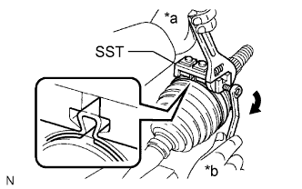 |
Place SST onto the front No. 2 axle outboard joint boot clamp.
Tighten SST so that the No. 2 front axle outboard joint boot clamp is pinched.
| *a | Hold |
| *b | Turn |
| 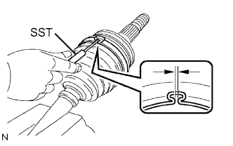 |
Using SST, measure the clearance of the No. 2 front axle out board joint boot clamp.
| 6. INSTALL FRONT NO. 1 AXLE OUTBOARD JOINT BOOT CLAMP |
Hold the drive shaft lightly in a vise between aluminum plates.
Secure the outboard joint boot clamp to the boot.
| 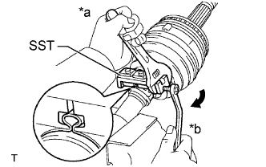 |
Place SST onto the outboard joint boot clamp.
Tighten SST so that the front axle outboard joint boot clamp is pinched.
| *a | Hold |
| *b | Turn |
| 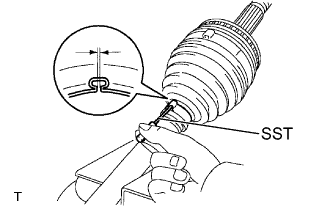 |
Using SST, measure the clearance of the front axle outboard joint boot clamp.
| 7. INSTALL INBOARD JOINT BOOT |
Temporarily install a new inboard joint boot to the outboard joint.
| 8. INSTALL FRONT AXLE INBOARD JOINT ASSEMBLY |
Install new parts to the outboard joint in the following order.
| 1. | Front axle inboard joint boot clamp |
| 2. | Front axle inboard joint boot |
| 3. | Front No. 2 axle inboard joint boot clamp |
Secure the outboard joint shaft in a vise between aluminum plates.
| 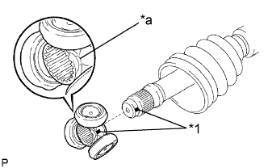 |
Align the matchmarks and install the tripod joint to the outboard joint.
| *1 | Matchmark |
| *a | Beveled Side |
Align the matchmarks and install the tripod to the inboard joint.
Using a brass bar and hammer, tap the tripod onto the outboard joint.
 |
Using a snap ring expander, install a new snap ring.
Pack the inboard joint assembly and boot with grease from the boot kit.
| 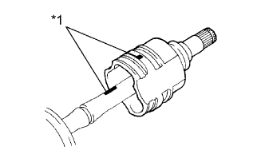 |
Align the matchmarks and install the inboard joint onto the outboard joint.
| *1 | Matchmark |
| 9. INSTALL FRONT NO. 1 AXLE INBOARD JOINT BOOT CLAMP |
Hold the drive shaft lightly in a vise between aluminum plates.
Secure the inboard joint boot clamp to the boot.
| 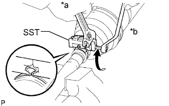 |
Place SST onto the inboard joint boot clamp.
Tighten SST so that the front axle inboard joint boot clamp is pinched.
| *a | Hold |
| *b | Turn |
| 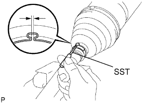 |
Using SST, measure the clearance of the front axle inboard joint boot clamp.
| 10. INSTALL FRONT NO. 2 AXLE INBOARD JOINT BOOT CLAMP |
Hold the inboard joint shaft assembly in a vise between aluminum plates.
| 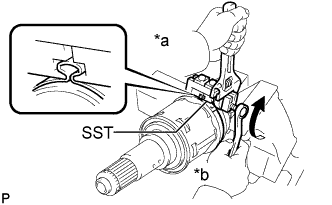 |
Place SST onto the No. 2 front axle inboard joint boot clamp.
Tighten SST so that the No. 2 front axle inboard joint boot clamp is pinched.
| *a | Hold |
| *b | Turn |
| 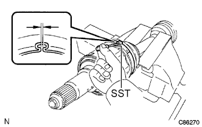 |
Using SST, measure the clearance of the No. 2 front axle inboard joint boot clamp.